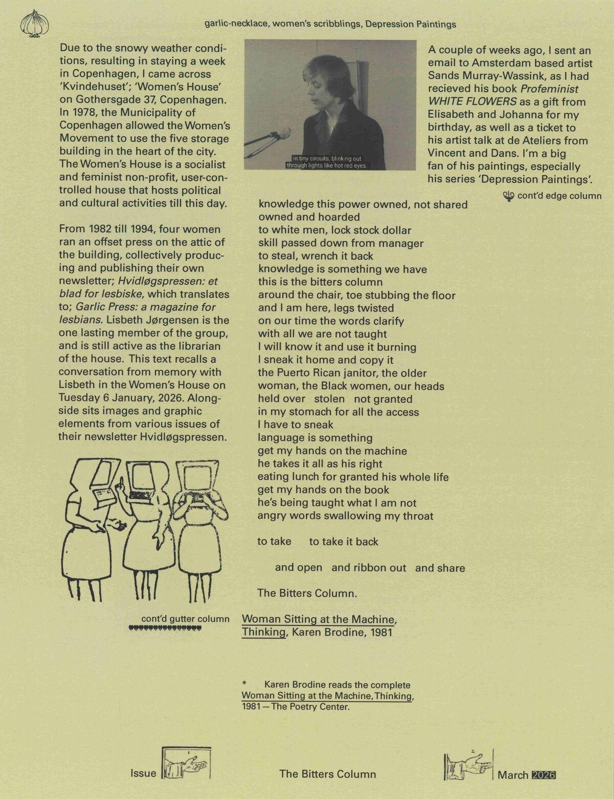
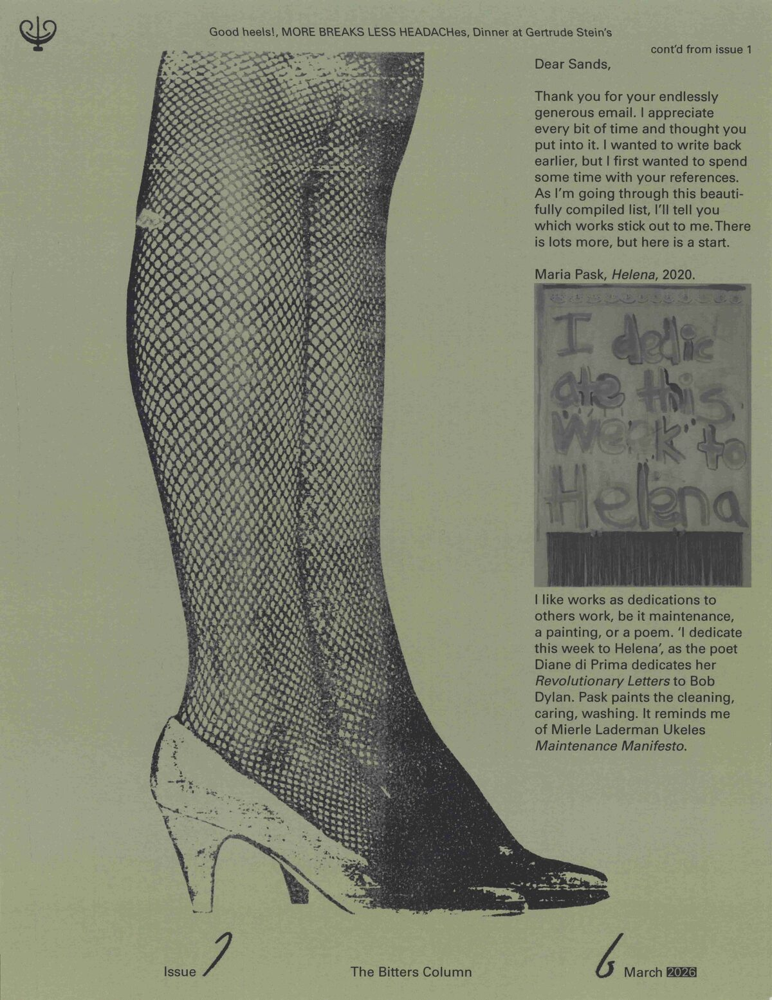
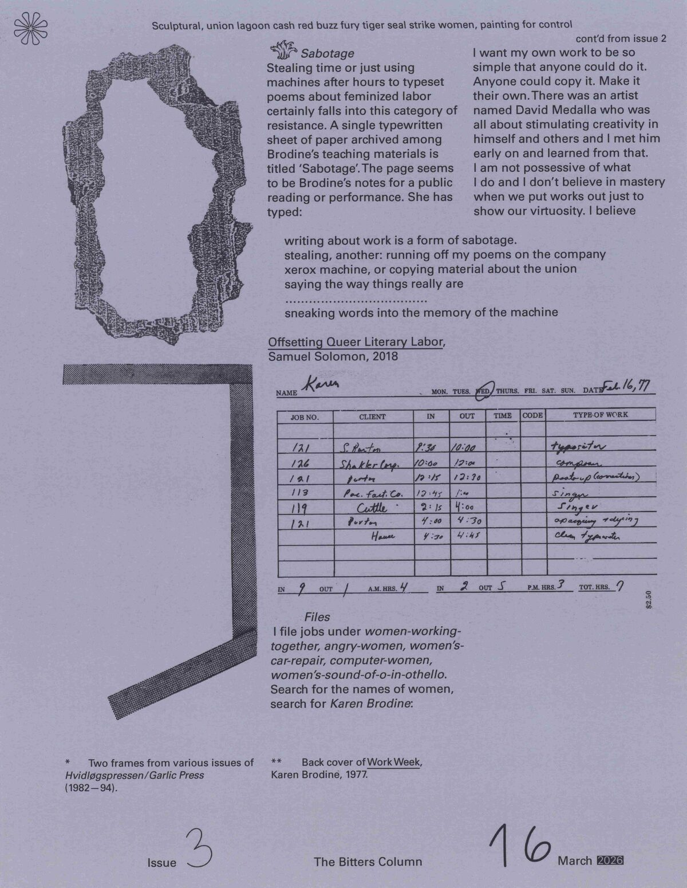
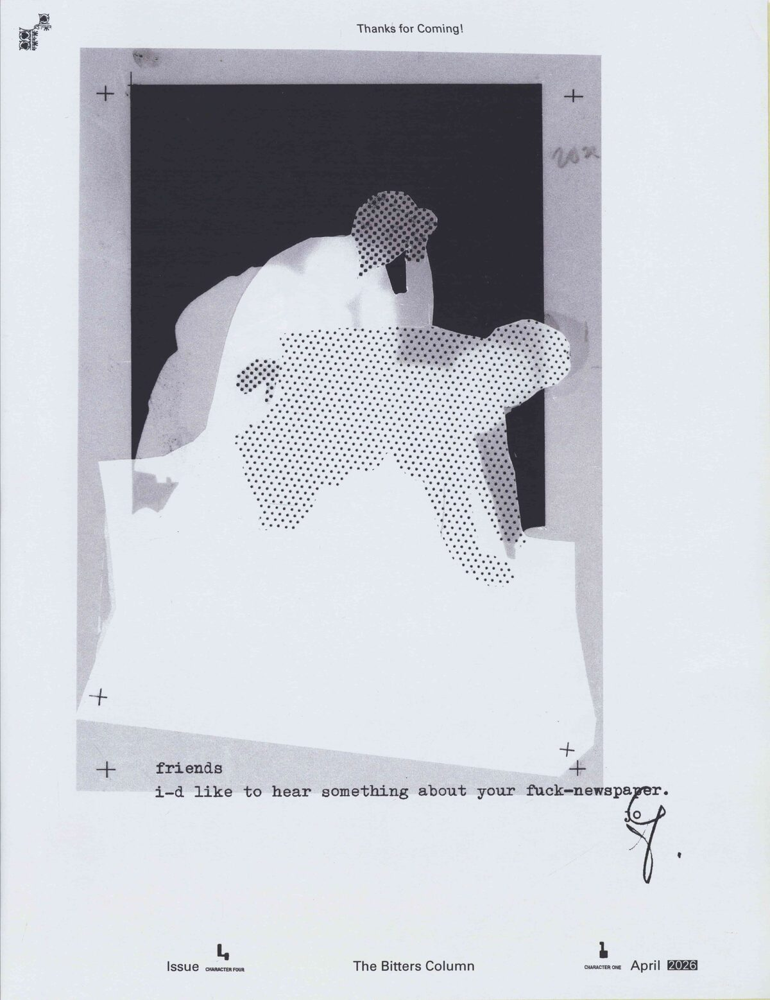
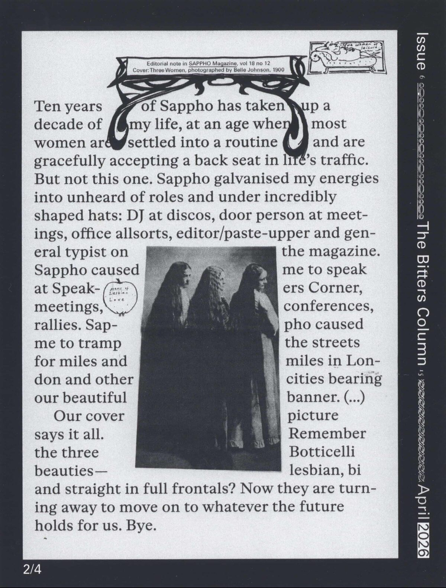
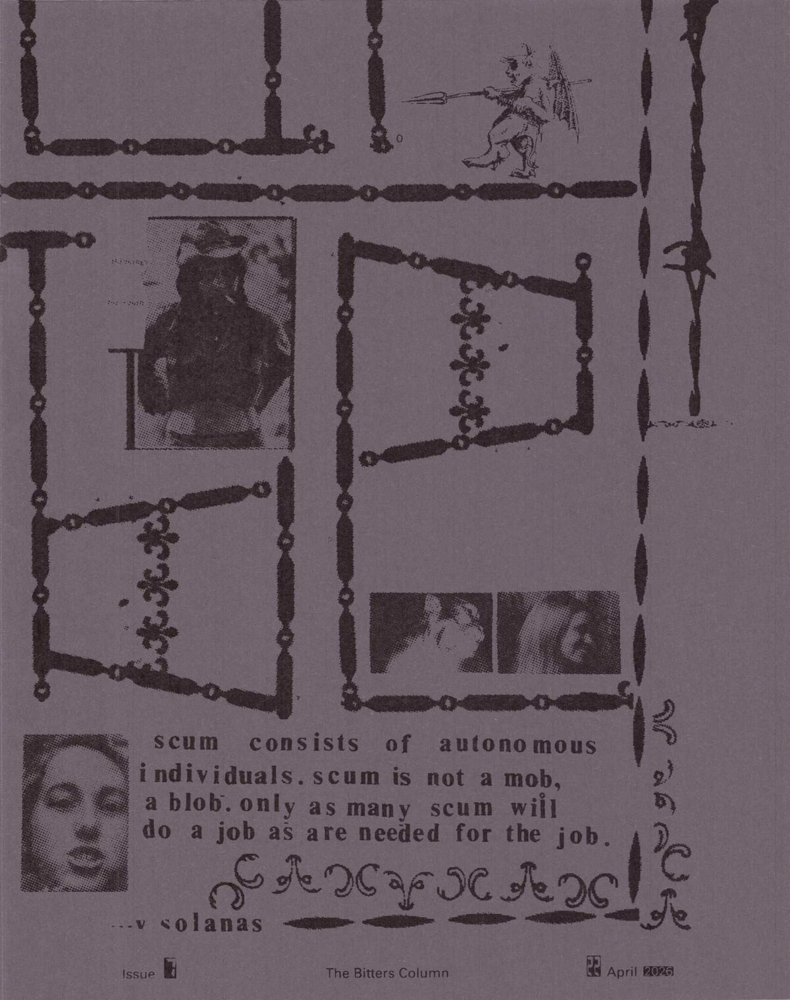
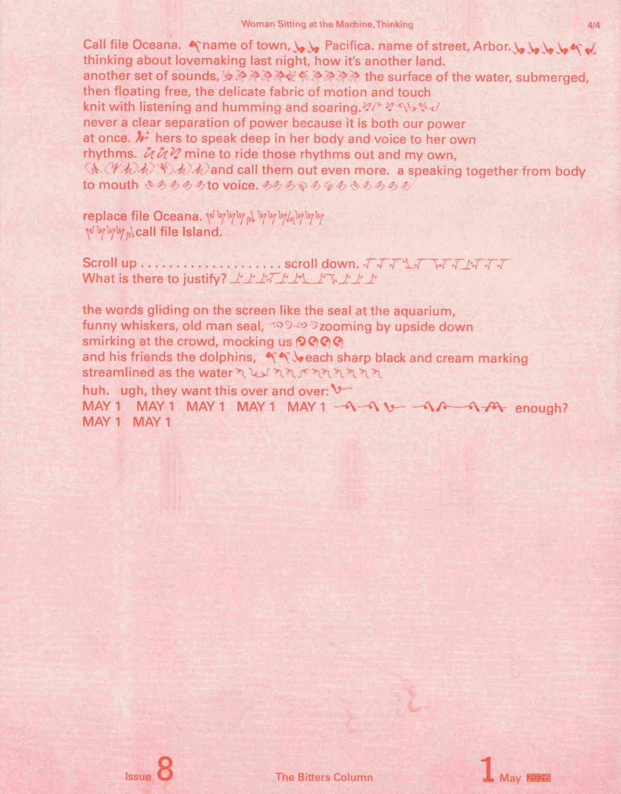
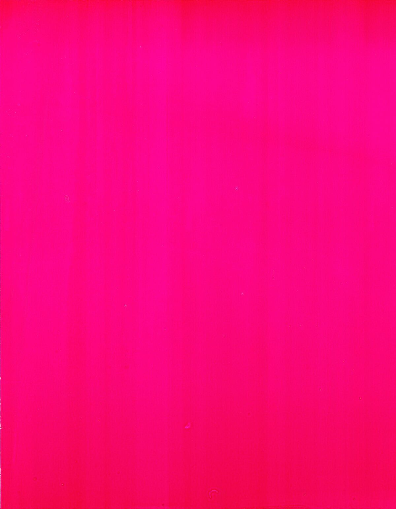
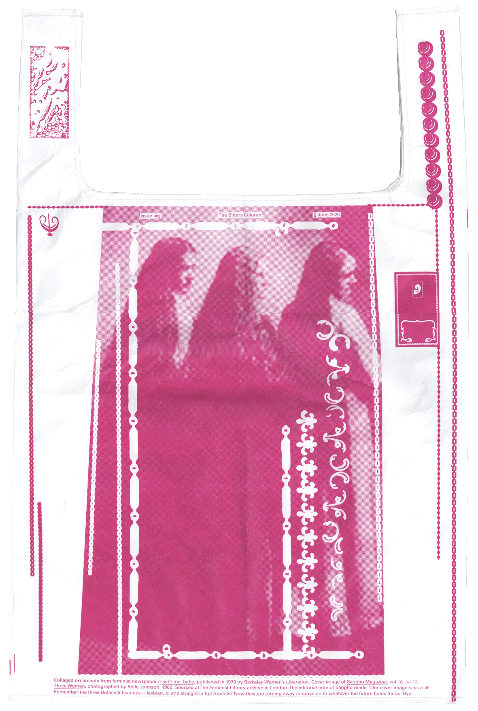
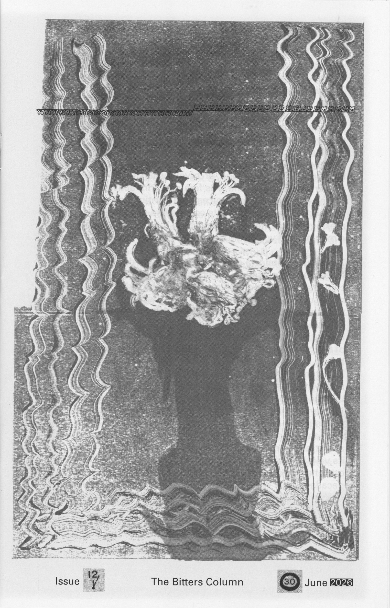

The Bitters Column is a bi-weekly publication about forming a feminist graphic design practice in conversation with others.
Issue 1, 2, and 3 includes a conversation with archivist Lisbeth Jørgensen, along with material from Hvidløgspressen (Garlic Press): A Magazine for Lesbians, collectively produced from 1982 – 1994, at Kvindehuset (Women’s House) in Copenhagen. Poems by Marxist-writer and typesetter Karen Brodine. Email correspondence on women painters with the artist Sands Murray-Wassink.
Issue 4 is a text on labor and sexuality, titled IN REST, IN DEFIANCE, written by Vincent Becher for 1 May (Labor Day) 2026. Along with images from Suck: The First European Sex Paper, published 1969 –1974, London.
Issue 5 is a special issue publishing a text titled Women* Sitting at the Machine, Thinking, written as an expanded editorial note of sorts, published in April 2026 on this webpage.
Issue 6 is a (delayed) series of four postcards, reading editorial notes from various publications in the archives of Mayday Rooms and The Feminist Library in London.
Issue 7 blows up and extends details of the feminist newspaper It Aint me Babe, published in 1970 by Berkeley Women’s Liberation.
Issue 8 amplifies as a collective reading of Karen Brodine's Woman Sitting at the Machine, Thinking, for 1 May (Labor Day) 2026.
Issue 9 comprises a series of glossy pink prints mounted on a wall, distributed through the format of the exhibition. Printed with Anja Aurand.
Issue 10, is a handbag in collaboration with Kornel Wojcinowicz, as the first edition of Solid: a collaborative garment project.
Issue 11 are collages made with Elisabeth Rafstedt and Johanna Ehde, with material from Palestine Poster Project Archive.
Issue 12 is in dialogue with Johanna Gratzer, along with a visual essay with sourced images from Chrysalis Magazine: A Magazine of Women’s Culture, produced from 1977 – 1980, at The Woman’s Building, Los Angeles.
Stan Zielinski selects the footer numbers for each issue.
*
Contact: malvaaskerup@gmail.com
*Subscribe to The Bitters Column newsletter*
Send an inquiry via email to purchase an issue. The price for each issues differ, according to production time and costs.
This is a research project into editorial practices as means for collaborative work, initiated by graphic designer Malva Askerup, as part of graduation project 2026.
Web design and development: Malva Askerup










